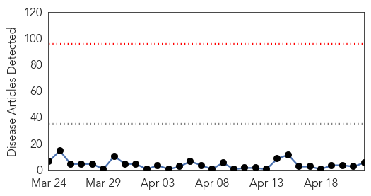
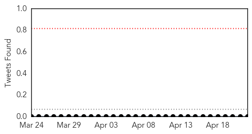
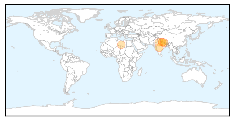
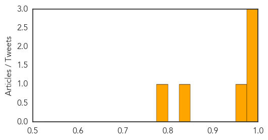

Toggle navigation
Early Warning
Daily Alerts
Swine Flu
Apr 22, 2015
Compare to:
-
Dengue Fever
Hemmorhagic Fever
Mold/Fungal Infection
Influenza
Meningitis
Pertussis / Whooping Cough
Middle East Respiratory Syndrome
Cholera
Hepatitis
Chikungunya
Yellow Fever
Bubonic Plague
West Nile Virus
Ebola
Measles
Unknown
Mumps
30 Day Trends
Web: 0
alerts
, 0
warnings
Twitter: 0
alerts
, 0
warnings
Top Articles:
0.999
Jajarkot’s unsung heroes
0.998
18 more docs mobilised
0.997
Swine flu outbreak kills 24 in Nepal
0.958
NEPAL Alarm swine flu: at least 30 dead and hundreds sick
0.833
Shillong to hold 2-day meet on swine flu
0.789
Dr KC reaches swine flu affected Jajarkot
Top Tweets:
No tweets found for Apr 22, 2015
Web/News Articles

Tweets

Article Locations

Article Confidences
